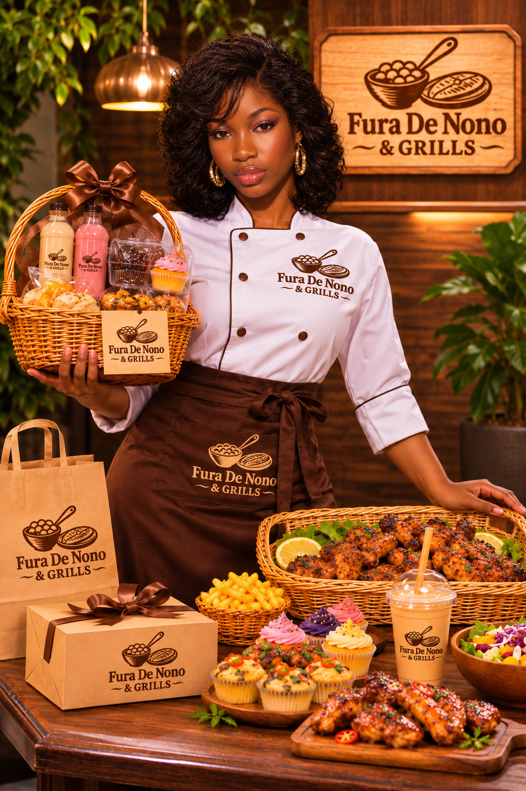

Fresh fura & cow milk
Our signature fura de nono, fresh cow milk and creamy, refreshing blends.
 Fura De Nono & Grills
Fura De Nono & GrillsMeet the founder
A Ghanaian and Nigerian heritage, a childhood love of food, and a passion that grew into Fura De Nono & Grills.
I'm the founder behind the brand. For now, I personally lead this journey — bringing together the flavours, ideas and care that I want every customer to experience.
Explore our menu ↗
Where it began
My interest in food began when I was young. Growing up with both Ghanaian and Nigerian roots gave me an appreciation for the flavours and food traditions that bring people together.
One of my earliest lessons came from my mother, who taught me how to prepare and fry plantain. That simple but special memory helped nurture my curiosity and love for creating food.
Over time, that passion became something bigger: Fura De Nono & Grills.
Like every journey, our brand has had different seasons. After a pause, we took time to reflect, regroup and reimagine what we wanted to bring to our customers. Today, we are stepping into a fresh chapter through our rebranding — with renewed energy, creativity and care.
Our signature fura de nono, fresh cow milk and creamy, refreshing blends.
Flavourful grilled options and satisfying bites, prepared with care.
Sweet treats and our exciting fruit-shaped ice cream dessert creations — a playful part of our new chapter.
A note from the founder
To everyone who has supported us, stayed with us and discovered us along the way, thank you. And if you're new here, welcome. Your support means a great deal as we continue building Fura De Nono & Grills, one thoughtful creation at a time.
This is more than food. It's heritage, creativity, passion and a fresh beginning.
Welcome to Fura De Nono & Grills
Thank you for stopping by. We look forward to sharing our food and our journey with you.
Browse the menu ↗